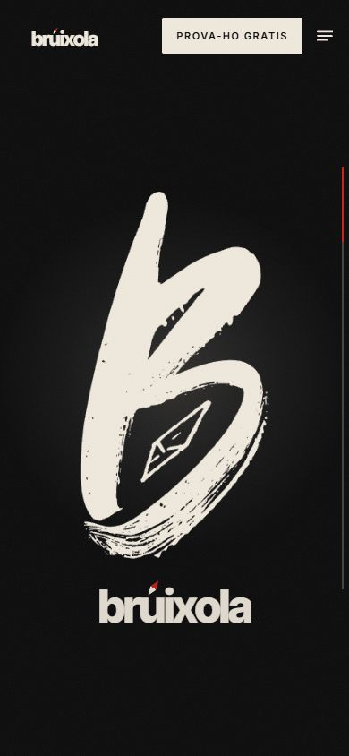

Portafoli v2 · Disseny web · Branding
PereColls
Dissenyo webs amb caràcter, de la identitat de marca fins a l'última pantalla que toca el client.
Old values, new life.



Hola, sóc en Pere
- Disseny web
- Webs multilingües
- Animació i scroll
- Branding i identitat
- Direcció d'art
Webs seleccionades
Pàgines on he participat, de la primera idea al disseny final. Entra a cada una per veure-la de prop.


Com treballo
Una web és la marca en moviment. Hi porto l'esperit gràfic dels anys 60 i 70, aquella seguretat clara i sense soroll, i el converteixo en pàgines que es llegeixen bé, es mouen amb intenció i funcionen en qualsevol pantalla.
Cada pantalla diu una sola cosa, i la diu bé.
Animacions que expliquen, no que distreuen.
Una web que només podria ser d'aquesta marca.
Continua
Contacte ràpid
T'agrada el que veus?
Un clic i s’obre Gmail en una pestanya nova amb el correu ja escrit per demanar-me més informació. Només l’has d’enviar.
Vull més informació